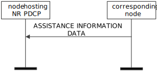

3GPP TS 38.425 V17.3.0 (2023-03)
Technical Specification
3rd Generation Partnership Project;
Technical Specification Group Radio Access Network;
NG-RAN;
NR user plane protocol
(Release 17)
The present document has been developed within the 3rd Generation
Partnership Project (3GPP TM) and may be further elaborated
for the purposes of 3GPP..
The present document has not been subject to any approval process by the
3GPP Organizational Partners and shall not be implemented.
This Specification is provided for future development work within 3GPP
only. The Organizational Partners accept no liability for any use of
this Specification.
Specifications and Reports for implementation of the 3GPP TM
system should be obtained via the 3GPP Organizational Partners'
Publications Offices.
Keywords
NR-RAN
3GPP
Postal address
3GPP support office address
650 Route des Lucioles - Sophia Antipolis
Valbonne - FRANCE
Tel.: +33 4 92 94 42 00 Fax: +33 4 93 65 47 16
Internet
http://www.3gpp.org
Copyright Notification
No part may be reproduced except as authorized by written
permission.
The copyright and the foregoing restriction extend to reproduction in
all media.
© 2023, 3GPP Organizational Partners (ARIB, ATIS, CCSA, ETSI, TSDSI, TTA, TTC).
All rights reserved.
UMTS™ is a Trade Mark of ETSI registered for the benefit of its members
3GPP™ is a Trade Mark of ETSI registered for the benefit of its
Members and of the 3GPP Organizational Partners
LTE™ is a Trade Mark of ETSI registered for the benefit of its Members
and of the 3GPP Organizational Partners
GSM® and the GSM logo are registered and owned by the GSM Association
Foreword 4
1 Scope 6
2 References 6
3 Definitions and abbreviations 6
3.1 Definitions 6
3.2 Abbreviations 7
4 General 7
4.1 General aspects 7
5 NR user plane protocol 7
5.1 General 7
5.2 NR user plane protocol layer services 7
5.3 Services expected from the Transport Network Layer 8
5.4 Elementary procedures 9
5.4.1 Transfer of Downlink User Data 9
5.4.1.1 Successful operation 9
5.4.1.2 Unsuccessful operation 10
5.4.2 Downlink Data Delivery Status 10
5.4.2.1 Successful operation 10
5.4.2.2 Unsuccessful operation 12
5.4.3 Transfer of Assistance Information 12
5.4.3.1 Successful operation 12
5.5 Elements for the NR user plane protocol 13
5.5.1 General 13
5.5.2 Frame format for the NR user plane protocol 14
5.5.2.1 DL USER DATA (PDU Type 0) 14
5.5.2.2 DL DATA DELIVERY STATUS (PDU Type 1) 14
5.5.2.3 ASSISTANCE INFORMATION DATA (PDU Type 2) 17
5.5.3 Coding of information elements in frames 17
5.5.3.1 PDU Type 17
5.5.3.2 Spare 18
5.5.3.3 Report polling 18
5.5.3.4 NR-U Sequence Number 18
5.5.3.5 Desired buffer size for the data radio bearer 18
5.5.3.6 Desired Data Rate 18
5.5.3.7 DL Flush 18
5.5.3.8 DL discard NR PDCP PDU SN 19
5.5.3.9 DL Discard Blocks 19
5.5.3.10 DL discard NR PDCP PDU SN start 19
5.5.3.11 DL discard Number of blocks 19
5.5.3.12 Discarded Block size 19
5.5.3.13 Lost Packet Report 19
5.5.3.14 Final Frame Indication 19
5.5.3.15 Number of lost NR-U Sequence Number ranges reported 20
5.5.3.16 Start of lost NR-U Sequence Number range 20
5.5.3.17 End of lost NR-U Sequence Number range 20
5.5.3.18 Highest Delivered NR PDCP SN Ind 20
5.5.3.19 Highest successfully delivered NR PDCP Sequence Number 20
5.5.3.20 Highest Transmitted NR PDCP SN Ind 20
5.5.3.21 Highest transmitted NR PDCP Sequence Number 20
5.5.3.22 Cause Report 21
5.5.3.23 Cause Value 21
5.5.3.24 Padding 21
5.5.3.28 Void 21
5.5.3.29 Retransmission flag 21
5.5.3.30 Delivered Retransmitted NR PDCP SN Ind 21
5.5.3.31 Retransmitted NR PDCP SN Ind 21
5.5.3.32 Successfully delivered retransmitted NR PDCP Sequence Number 22
5.5.3.33 Retransmitted NR PDCP Sequence Number 22
5.5.3.34 Data Rate Indication 22
5.5.3.35 PDCP Duplication Indication 22
5.5.3.36 PDCP Duplication Activation Suggestion 22
5.5.3.37 Number of Assistance Information Field 22
5.5.3.38 Assistance Information Type 22
5.5.3.39 Radio Quality Assistance Information 23
5.5.3.40 Assistance Information Report Polling Flag 23
5.5.3.41 Report Delivered 23
5.5.3.42 DL report NR PDCP PDU SN 23
5.5.3.43 User data existence flag 23
5.5.3.44 Number of octets for Radio Quality Assistance Information Field 23
5.5.3.45 Assistance Information Indication 24
5.5.3.46 UL Delay Indicator 24
5.5.3.47 DL Delay Indicator 24
5.5.3.48 UL Delay DU Result 24
5.5.3.49 DL Delay DU Result 24
5.5.3.50 Delivered NR PDCP SN Range Ind 24
5.5.3.51 Number of successfully delivered out of sequence PDCP Sequence Number range 25
5.5.3.52 Start of successfully delivered out of sequence PDCP Sequence Number range 25
5.5.3.53 End of successfully delivered out of sequence PDCP Sequence Number range 25
5.5.3.54 Request OutOfSeq Report 25
5.5.3.55 NR-U SN Ind. 25
5.5.3.56 Feedback Delay Ind. 25
5.5.3.57 NR-U Sequence Number of Polling Frame 26
5.5.3.58 Feedback Delay Result 26
5.5.4 Timers 26
5.6 Handling of unknown, unforeseen and erroneous protocol data 26
Annex A (informative): Example of using future Extension 27
A.1 Example of using Future Extension field 27
A.1.1 New IE Flags 27
Annex B (informative): Change history 28
This Technical Specification has been produced by the 3rd Generation Partnership Project (3GPP).
The contents of the present document are subject to continuing work within the TSG and may change following formal TSG approval. Should the TSG modify the contents of the present document, it will be re-released by the TSG with an identifying change of release date and an increase in version number as follows:
Version x.y.z
where:
x the first digit:
1 presented to TSG for information;
2 presented to TSG for approval;
3 or greater indicates TSG approved document under change control.
y the second digit is incremented for all changes of substance, i.e. technical enhancements, corrections, updates, etc.
z the third digit is incremented when editorial only changes have been incorporated in the document.
The present document specifies the NR user plane protocol functions used within NG-RAN and, for EN-DC and LTE UP-CP split within E-UTRAN. NR user plane protocol functions may reside in nodes terminating either the X2-U (for EN-DC) or the Xn-U or the F1-U interface. User plane protocol functions support both E-UTRA PDCP and NR PDCP.
The following documents contain provisions which, through reference in this text, constitute provisions of the present document.
- References are either specific (identified by date of publication, edition number, version number, etc.) or non‑specific.
- For a specific reference, subsequent revisions do not apply.
- For a non-specific reference, the latest version applies. In the case of a reference to a 3GPP document (including a GSM document), a non-specific reference implicitly refers to the latest version of that document in the same Release as the present document.
[1] 3GPP TR 21.905: "Vocabulary for 3GPP Specifications".
[2] 3GPP TS 29.281: "General Packet Radio System (GPRS) Tunnelling Protocol User Plane (GTPv1-U)".
[3] 3GPP TS 37.340: "NR; Multi-connectivity; Overall description; Stage-2".
[4] 3GPP TS 36.321: "Evolved Universal Terrestrial Radio Access (E-UTRA); Medium Access Control (MAC) protocol specification".
[5] 3GPP TS 38.321: "NR; Medium Access Control (MAC) protocol specification".
[6] 3GPP TS 36.322: "Evolved Universal Terrestrial Radio Access (E-UTRA); Radio Link Control (RLC) protocol specification".
[7] 3GPP TS 38.322: "NR; Radio Link Control (RLC) protocol specification".
[8] 3GPP TS 23.501: "System Architecture for the 5G System".
[9] 3GPP TS 36.401: "Evolved Universal Terrestrial Radio Access Network (E-UTRAN); Architecture description".
For the purposes of the present document, the terms and definitions given in 3GPP TR 21.905 [1] and the following apply. A term defined in the present document takes precedence over the definition of the same term, if any, in 3GPP TR 21.905 [1].
Corresponding node: a node interacting with a node hosting PDCP for flow control. In an IAB network, this is the IAB-DU serving the UE for the corresponding data radio bearer.
eNB-CP: as defined in TS 36.401 [9].
eNB-UP: as defined in TS 36.401 [9].
Master node: as defined in TS 37.340 [3].
Secondary node: as defined in TS 37.340 [3].
For the purposes of the present document, the abbreviations given in 3GPP TR 21.905 [1] and the following apply. An abbreviation defined in the present document takes precedence over the definition of the same abbreviation, if any, in 3GPP TR 21.905 [1].
EN-DC E-UTRA-NR Dual Connectivity
IAB Integrated Access and Backhaul
MBS Multicast/Broadcast Service
MR-DC Multi-RAT Dual Connectivity
MRB MBS Radio Bearer
PTM Point To Multipoint
The NR user plane protocol is located in the User Plane of the Radio Network layer over either the Xn or the X2 or the F1 interface or the W1 interface or the UP interface between eNB-CP and eNB-UP.
The NR user plane protocol is used to convey control information related to the user data flow management of data radio bearers.
Each NR user plane protocol instance is associated to one data radio bearer only. There is one NR user plane instance per GTP tunnel. When a GTP tunnel is set up, a new NR user plane instance is set up.
If configured, NR user plane protocol instances exist at the Master node and the Secondary node in the context of DC or at nodes hosting F1-U protocol terminations or at nodes hosting W1-U protocol terminations or at eNB-CP and eNB-UP. The NR user plane protocol supports direct communication between NR user plane protocol entities, regardless of whether they terminate the same or different user plane interfaces.
NOTE: User data radio bearers may be setup for data forwarding purposes during Xn HO or during DC related mobility without requiring the execution of any additional data radio bearer related user plane protocol functions related to an NR user plane protocol instance.
On each data radio bearer, the NR user plane protocol operates with RLC AM or RLC UM.
In this version of the present document, NR user plane protocol data is conveyed by GTP-U protocol means, more specifically, by means of the "NR RAN Container" GTP-U extension header as defined in TS 29.281 [2].
The NR user plane protocol layer is using services of the transport network layer in order to allow flow control of user data packets transferred from the node hosting PDCP to the corresponding node.
NOTE 1: In this section, NR user plane protocol layer services are also applicable to E-UTRA PDCP. With this understanding, each instance of NR PDCP can be replaced by E-UTRA PDCP.
The following functions are provided by the NR user plane protocol:
- Provision of NR user plane specific sequence number information for user data transferred from the node hosting NR PDCP to the corresponding node for a specific data radio bearer.
- Information of successful in sequence delivery of NR PDCP PDUs to the UE from the corresponding node for user data associated with a specific data radio bearer.
- Information of NR PDCP PDUs that were not delivered to the UE or not transmitted to the lower layers.
- Information of NR PDCP PDUs transmitted to the lower layers for user data associated with a specific data radio bearer.
- Information of downlink NR PDCP PDUs to be discarded for user data associated with a specific data radio bearer;
- Information of the currently desired buffer size at the corresponding node for transmitting to the UE user data associated with a specific data radio bearer.
- Information of the currently desired data rate in bytes at the corresponding node for transmitting to the UE user data associated with a specific data radio bearer;
- Information of successful in sequence delivery of NR PDCP PDUs to the UE from the corresponding node for retransmission user data associate with a specific data radio bearer;
- Information of NR PDCP PDUs transmitted to the lower layers for retransmission user data associated with a specific data radio bearer.
- Information of the specific events at the corresponding node.
- Information on Radio Link Quality from the corresponding node for user data associated with a specific data radio bearer.
- Information for QoS monitoring from the corresponding node for user data associated with a specific data radio bearer.
The NR user plane protocol layer expects the following services from the Transport Network Layer:
- Transfer of user data.
NOTE 1: In this section, NR user plane elementary procedures are also applicable to E-UTRA PDCP unless specified otherwise. With this understanding, each instance of NR PDCP can be replaced by E-UTRA PDCP unless specified otherwise.
The purpose of the Transfer of Downlink User Data procedure is to provide NR-U specific sequence number information at the transfer of user data carrying a DL NR PDCP PDU from the node hosting the NR PDCP entity to the corresponding node.
An NR user plane protocol instance making use of the Transfer of Downlink User Data procedure is associated to a single radio bearer only.
The node hosting the NR PDCP entity shall assign consecutive NR-U sequence numbers to each transferred NR-U packet. A retransmitted NR PDCP PDU shall be assigned a new NR-U sequence number.
The node hosting the NR PDCP entity indicates to the corresponding node whether this NR-U packet is a retransmission of NR PDCP PDU.
The node hosting the NR PDCP entity can indicate to the corresponding node to either discard all NR PDCP PDUs up to and including a defined DL discard NR PDCP PDU SN or discard one or a number of blocks of downlink NR PDCP PDUs.
If the Assistance Information Report Polling Flag is equal to 1, the corresponding node shall, if supported, send the ASSISTANCE INFORMATION DATA to the node hosting the NR PDCP entity.
The corresponding node shall detect whether an NR-U packet was lost and memorise the respective sequence number after it has declared the respective NR-U packet as being "lost".
The corresponding node shall transfer the remaining NR PDCP PDUs towards the UE and memorise the highest NR PDCP PDU sequence number of the NR PDCP PDU that was successfully delivered (as defined in TS 36.322 [6] and TS 38.322 [7]) in sequence towards the UE (in case RLC AM is used) and the highest NR PDCP PDU sequence number of the NR PDCP PDU that was transmitted to the lower layers.
The corresponding node shall send the DL DATA DELIVERY STATUS if the Report Polling Flag is set to 1 or when the NR PDCP PDU with the indicated DL report NR PDCP PDU SN has been successfully delivered, unless a situation of overload at the corresponding node is encountered. The DL DATA DELIVERY STATUS sent as a response to a specific DL report NR PDCP PDU SN shall be sent only when all PDCP PDU SNs up to this DL report NR PDCP PDU have been successfully delivered in-sequence.
If the Request OutOfSeq Report is set to 1, the corresponding node shall, if supported, include the NR PDCP PDU sequence number successfully delivered out of sequence in the DL DATA DELIVERY STATUS to the node hosting the NR PDCP entity.
NOTE: The Transfer of Downlink User Data procedure and the associated feedback of lost NR-U packets assist the node hosting the NR PDCP entity in avoiding NR PDCP HFN de-synchronisation. If a deployment decides to not use the Transfer of Downlink User Data procedure, NR PDCP HFN synchronization should be ensured by other means.
If the User data existence flag is set to 1, the corresponding node assumes that the node hosting the NR PDCP entity has some user data for the concerned data radio bearer. The corresponding node decides whether and when to use DRX for the UE (i.e. the corresponding node may indicate the UE to use DRX even if the flag is set to 1 and the received DL USER DATA frame contains no user data).
Figure 5.4.1.1-1: Successful Transfer of Downlink User Data
Void.
The purpose of the Downlink Data Delivery Status procedure is to provide feedback from the corresponding node to the node hosting the NR PDCP entity to allow the node hosting the NR PDCP entity to control the downlink user data flow via the corresponding node for the respective data radio bearer. The corresponding node may also transfer uplink user data for the concerned data radio bearer to the node hosting the NR PDCP entity together with a DL DATA DELIVERY STATUS frame within the same GTP-U PDU.
The Downlink Data Delivery Status procedure is also used to provide feedback from the corresponding node to the node hosting the NR PDCP entity to allow the node hosting the NR PDCP entity to control the successful delivery of DL control data to the corresponding node.
When the corresponding node decides to trigger the feedback for Downlink Data Delivery procedure it shall report as specified in section 5.2:
a) in case of RLC AM, the highest NR PDCP PDU sequence number successfully delivered in sequence to the UE among those NR PDCP PDUs received from the node hosting the NR PDCP entity i.e. excludes those retransmission NR PDCP PDUs;
NOTE 1: If the NR user plane protocol instance is associated a single RLC-AM entity for an MRB, specification text in bullet a) is applicable.
For all other cases, if the NR user plane protocol instance is associated with an MRB configured with at least one RLC AM entity and RLC-UM, the highest successfully delivered NR PDCP sequence number indicates the combined feedback of the highest NR PDCP sequence number successfully delivered in sequence to all the involved UEs for which the RLC AM entites have been configured, no retransmissions are performed, and the highest NR PDCP sequence number transmitted to the lower layers for PTM.
b) the desired buffer size in bytes for the concerned data radio bearer or for the MRB;
c) optionally, the desired data rate in bytes associated with a specific data radio bearer configured for the UE or for the MRB;
d) the NR-U packets that were declared as being "lost" by the corresponding node and have not yet been reported to the node hosting the NR PDCP entity within the DL DATA DELIVERY STATUS frame;
e) if retransmission NR PDCP PDUs have been delivered, the NR PDCP PDU sequence number associated with the highest NR-U sequence number among the retransmission NR PDCP PDUs successfully delivered to the UE in sequence of NR-U sequence number;
f) if retransmission NR PDCP PDUs have been transmitted to the lower layers, the NR PDCP PDU sequence number associated with the highest NR-U sequence number among the retransmission NR PDCP PDUs transmitted to the lower layers in sequence of NR-U sequence number;
g) the highest NR PDCP PDU sequence number transmitted to the lower layers among those NR PDCP PDUs received from the node hosting the NR PDCP entity i.e. excludes those retransmission NR PDCP PDUs;
NOTE 2: If the NR user plane protocol instance is associated with an MRB configured with RLC-UM entities only, the highest NR PDCP PDU sequence number transmitted successfully to all lower layer instances is reported.
NOTE 3: If a deployment has decided not to use the Transfer of Downlink User Data procedure, d), e) and f) above are not applicable.
h) in case of RLC AM, the NR PDCP PDU sequence number successfully delivered out of sequence to the UE among those NR PDCP PDUs received from the node hosting the NR PDCP entity i.e. excludes those retransmission NR PDCP PDUs.
As soon as the corresponding node detects the successful RACH access by the UE for the corresponding data radio bearer(s), the corresponding node shall send initial DL DATA DELIVERY STATUS frame to the node(s) hosting the NR PDCP entity(ies). The node hosting NR PDCP entity may start sending DL data before receiving the initial DL DATA DELIVERY STATUS frame. In case the DL DATA DELIVERY STATUS frame is sent before any NR PDCP PDU is transferred to lower layers, the information on the highest NR PDCP PDU sequence number successfully delivered in sequence to the UE and the highest NR PDCP PDU sequence number transmitted to the lower layers may not be provided.
The DL DATA DELIVERY STATUS frame shall also include a final frame indication when this frame is the last DL status report. When receiving such indication, the node hosting the NR PDCP entity considers that no more UL or DL data is expected to be transmitted between the corresponding node and the UE.
The DL DATA DELIVERY STATUS frame may also include an indication of detected radio link outage or radio link resume for the concerned data radio bearer. When receiving an indication of radio link outage detection, the node hosting the NR PDCP entity considers that traffic delivery over the data radio bearer configured for the UE is unavailable at the corresponding node both in UL and DL. When receiving an indication of radio link resume detection, the node hosting the NR PDCP entity considers that traffic delivery over the data radio bearer configured for the UE is available at the corresponding node both in UL and in DL. When receiving an indication of UL or DL radio link outage detection, the node hosting the NR PDCP entity considers that traffic delivery over the data radio bearer configured for the UE is unavailable at the corresponding node for UL or DL, depending on the indicated outage. When receiving an indication of UL or DL radio link resume detection, the node hosting the NR PDCP entity considers that traffic delivery over the data radio bearer configured for the UE is available at the corresponding node in UL or in DL, depending on the indicated resume. These indications are not applicable to E-UTRA PDCP.
For report polling triggered reporting, the DL DATA DELIVERY STATUS frame may include the feedback delay result and the NR-U sequence number of the frame where Report Polling Flag is included and that triggered the signalling of the DL DATA DELIVERY STATUS.
The node hosting the NR PDCP entity, when receiving the DL DATA DELIVERY STATUS frame:
- regards the desired buffer size under b) and the data rate under c) above as the amount of data to be sent from the hosting node:
- If the value of the desired buffer size is 0, the hosting node shall stop sending any data per bearer.
- If the value of the desired buffer size in b) above is greater than 0, the hosting node may send up to this amount of data per bearer:
- first including the data to be retransmitted;
- then the new data, starting from the last "Highest successfully delivered NR PDCP Sequence Number" for RLC AM if received, or starting from the last "Highest transmitted NR PDCP Sequence Number" for RLC UM if received.
- The value of the desired data rate in c) above is the amount of data desired to be received in a specific amount of time. The amount of time is 1 sec.
- The information of the buffer size in b) above and of the data rate in c) above is valid until the next DL DATA DELIVERY STATUS frame is received.
- is allowed to remove the buffered NR PDCP PDUs of a RLC AM bearer, according to the feedback of successfully delivered NR PDCP PDUs;
- decides upon the actions necessary to take for NR PDCP PDUs reported other than transmitted and/or successfully delivered.
In case of RLC AM, after the highest NR PDCP PDU sequence number successfully delivered in sequence is reported to the node hosting the NR PDCP entity, the corresponding node removes the respective NR PDCP PDUs. For RLC UM, the corresponding node may remove the respective NR PDCP PDUs after transmitting to lower layers.
Figure 5.4.2.1-1: Successful Downlink Data Delivery Status
Void.
NOTE 1: In this section, PDCP duplication and delay measurement related information are not applicable to E-UTRA PDCP.
The purpose of the Transfer of Assistance Information procedure is to provide assistance information to the node hosting the NR PDCP entity. Such information may be taken into consideration by the node hosting the NR PDCP entity for UP management and optimisation procedures.
An NR user plane protocol instance making use of the Transfer of Assistance Information procedure is associated to a single data radio bearer only.
The Transfer of Assistance Information procedure may be invoked if
- the corresponding node decides to send the Radio Quality Assistance Information and/or the PDCP duplication activation suggestion to the node hosting the NR PDCP entity for the concerned data radio bearer or,
- the corresponding node decides to send the Radio Quality Assistance Information to the node hosting the NR PDCP entity for the concerned RLC entity.
The Transfer of Assistance Information procedure may be invoked if the corresponding node is configured to perform the QoS monitoring and to send the QoS monitoring results to the node hosting the NR PDCP entity for the concerned data radio bearer.
The ASSISTANCE INFORMATION DATA frame may include one or more Radio Quality Assistance Information. The information shall consist of the information indicated in the Assistance Information Type.
The ASSISTANCE INFORMATION DATA shall be sent, if supported, when the corresponding node receives a DL USER DATA PDU including the Assistance Information Report Polling Flag set to 1.
The ASSISTANCE INFORMATION DATA frame may include the PDCP Duplication Activation Suggestion, which informs the node hosting the NR PDCP entity of the suggestion from the corresponding node on whether to activate or not activate DL PDCP duplication. The node hosting the NR PDCP entity may take this information into account to take a decision on whether to activate or not activate PDCP duplication.
The ASSISTANCE INFORMATION DATA frame may include the UL Delay or/and DL Delay measured by the corresponding node. The node hosting the NR PDCP entity may take this information into account to calculate the whole UL or/and DL delay of RAN.

Figure 5.4.3.1-1: Successful Transfer of Assistance Information Data
In the present document the structure of frames is specified by using figures similar to figure 5.5.1-1.
| Bits |
|
||||||||
| 7 | 6 | 5 | 4 | 3 | 2 | 1 | 0 | ||
| Field 1 | Field 2 | 1 | |||||||
| Field 3 | Field 4 | 2 | |||||||
| Field 4 continue | Spare | ||||||||
| Spare | Field 5 | 1 | |||||||
| Field 6 | 2 | ||||||||
| Field 6 continue | Padding Bits | ||||||||
| Future Extension | 0-m | ||||||||
| Padding | 0-3 | ||||||||
Figure 5.5.1-1: Example frame format
Unless otherwise indicated, fields which consist of multiple bits within an octet have the most significant bit located at the highest bit position of the field (according to the bit numbers indicated above frame in figure 5.5.1-1). In addition, if a field spans several octets, most significant bits are located in lower numbered octets (right of frame in figure 5.5.1-1).
The frame is transmitted starting from the lowest numbered octet. Within each octet, the bits are sent according decreasing bit position (bit position 7 first).
Bits labelled "Spare" should be set to "0" by the sender and should not be checked by the receiver.
The header part of the frame is always an integer number of octets. The payload part is octet aligned (by adding 'Padding Bits' when needed). The total size of the frame shall not exceed 1018 octets (see TS 29.281 [2]).
The receiver should be able to remove an additional Future Extension
field that may be present.
See description of Future Extension field in A.1.
Padding octets may be added at the end of the frame, see Padding in 5.5.3.24
This frame format is defined e.g. to allow the corresponding node to detect lost NR-U packets and may be associated with the transfer of a Downlink PDCP PDU.
The following shows the respective DL USER DATA frame.
NOTE 1: All information elements defined in Figure 5.5.2.1-1 are also applicable to E-UTRA PDCP. With this understanding, each instance of NR PDCP can be replaced by E-UTRA PDCP.
| Bits | Number of Octets | ||||||||
| 7 | 6 | 5 | 4 | 3 | 2 | 1 | 0 | ||
| PDU Type (=0) | Spare | DL Discard Blocks | DL Flush | Report polling | 1 | ||||
| Spare | Request OutofSeq Report | Report Delivered | User data existence flag | Assistance Info. Report Polling Flag | Retransmission flag | 1 | |||
| NR-U Sequence Number | 3 | ||||||||
| DL discard NR PDCP PDU SN | 0 or 3 | ||||||||
| DL discard Number of blocks | 0 or 1 | ||||||||
| DL discard NR PDCP PDU SN start (first block) | 0 or 3 | ||||||||
| Discarded Block size (first block) | 0 or 1 | ||||||||
| … | |||||||||
| DL discard NR PDCP PDU SN start (last block) | 0 or 3 | ||||||||
| Discarded Block size (last block) | 0 or 1 | ||||||||
| DL report NR PDCP PDU SN | 0 or 3 | ||||||||
| Padding | 0-3 | ||||||||
Figure 5.5.2.1-1: DL USER DATA (PDU Type 0) Format
This frame format is defined to transfer feedback to allow the receiving node (i.e. the node that hosts the PDCP entity) to control the downlink user data flow via the sending node (i.e. the corresponding node).
The following shows the respective DL DATA DELIVERY STATUS frame. The Figure shows an example of how a frame is structured when all optional IEs (i.e. those whose presence is indicated by an associated flag) are present.
Absence of such an IE changes the position of all subsequent IEs on octet level.
NOTE 1: All information elements defined in Figure 5.5.2.2-1 are also applicable to E-UTRA PDCP unless specified otherwise in section 5.5.3. With this understanding, each instance of NR PDCP can be replaced by E-UTRA PDCP.
| Bits |
|
||||||||||
| 7 | 6 | 5 | 4 | 3 | 2 | 1 | 0 | ||||
| PDU Type (=1) | Highest Transmitted NR PDCP SN Ind | Highest Delivered NR PDCP SN Ind | Final Frame Ind. | Lost Packet Report | 1 | ||||||
| Spare | Feedback Delay Ind. | NR-U SN Ind. | Delivered NR PDCP SN Range Ind | Data rate Ind. | Retransmitted NR PDCP SN Ind | Delivered Retransmitted NR PDCP SN Ind | Cause Report | 1 | |||
| Desired buffer size for the data radio bearer | 4 | ||||||||||
| Desired Data Rate | 0 or 4 | ||||||||||
| Number of lost NR-U Sequence Number ranges reported | 0 or 1 | ||||||||||
| Start of lost NR-U Sequence Number range | 0 or (6* Number of reported lost NR-U SN ranges) | ||||||||||
| End of lost NR-U Sequence Number range | |||||||||||
| Highest successfully delivered NR PDCP Sequence Number | 0 or 3 | ||||||||||
| Highest transmitted NR PDCP Sequence Number | 0 or 3 | ||||||||||
| Cause Value | 0 or 1 | ||||||||||
| Successfully delivered retransmitted NR PDCP Sequence Number | 0 or 3 | ||||||||||
| Retransmitted NR PDCP Sequence Number | 0 or 3 | ||||||||||
| Number of successfully delivered out of sequence PDCP Sequence Number range | 0 or 1 | ||||||||||
| Start of successfully delivered out of sequence PDCP Sequence Number range | 0 or (6* Number of successfully delivered out of sequence PDCP Sequence Number range) | ||||||||||
| End of successfully delivered out of sequence PDCP Sequence Number range | |||||||||||
| NR-U Sequence Number of Polling Frame | 0 or 3 | ||||||||||
| Feedback Delay Result | 0 or 4 | ||||||||||
| Padding | 0-3 | ||||||||||
Figure 5.5.2.2-1: DL DATA DELIVERY STATUS (PDU Type 1) Format
This frame format is defined to allow the node hosting the PDCP entity to receive assistance information.
The following shows the respective ASSISTANCE INFORMATION DATA frame.
NOTE 1: All information elements defined in Figure 5.5.2.3-1 are also applicable to E-UTRA PDCP unless specified otherwise in section 5.5.3.
| Bits | Number of Octets | |||||||||
| 7 | 6 | 5 | 4 | 3 | 2 | 1 | 0 | |||
| PDU Type (=2) | PDCP Dupl. Ind. | Assistance Info. Ind. | UL Delay Ind. | DL Delay Ind. | 1 | |||||
| Spare | PDCP Duplication Activation Suggestion | 1 | ||||||||
| Number of Assistance Information Fields | 0 or 1 | |||||||||
| Assistance Information Type | 0 or (2*Number of Assistance Info Fields + sum of Number of octets for Radio Quality Assistance Information Fields) | |||||||||
| Number of octets for Radio Quality Assistance Information Fields | ||||||||||
| Radio Quality Assistance Information | ||||||||||
| UL Delay DU Result | 0 or 4 | |||||||||
| DL Delay DU Result | 0 or 4 | |||||||||
Figure 5.5.2.3-1: ASSISTANCE INFORMATION DATA (PDU Type 2) Format
NOTE 1: In this section, information elements are also applicable to E-UTRA PDCP unless specified otherwise. With this understanding, each instance of NR PDCP can be replaced by E-UTRA PDCP unless specified otherwise.
Description: The PDU Type indicates the structure of the NR user plane frame. The field takes the value of the PDU Type it identifies; e.g. "0" for PDU Type 0. The PDU type is in bit 4 to bit 7 in the first octet of the frame.
Value range: {0=DL USER DATA, 1=DL DATA DELIVERY STATUS, 2= ASSISTANCE INFORMATION DATA, 3-15=reserved for future PDU type extensions}
Field length: 4 bits
Description: The spare field is set to "0" by the sender and should not be interpreted by the receiver. This field is reserved for later versions.
Value range: (0–2n-1).
Field Length: n bits.
Description: This parameter indicates that the node hosting the NR PDCP entity requests providing the downlink delivery status report.
Value range: {0=Downlink Data Delivery Status report not requested, 1= Downlink Data Delivery Status report requested}.
Field length: 1 bit.
Description: This parameter indicates the NR-U sequence number as assigned by the node hosting the NR PDCP entity.
Value range: {0..224-1}.
Field length: 3 octets.
Description: This parameter indicates the desired buffer size in bytes for the concerned data radio bearer as specified in clause 5.4.2.1.
Value range: {0..232-1}.
Field length: 4 octets.
Description: This parameter indicates the amount of data desired to be received in bytes in a specific amount of time (1 s) for a specific data radio bearer established for the UE as specified in clause 5.4.2.1.
Value range: {0..232-1}.
Field length: 4 octets.
Description: This parameter indicates the presence of DL discard NR PDCP PDU SN.
Value range: {0= DL discard NR PDCP PDU SN not present, 1= DL discard NR PDCP PDU SN present}.
Field length: 1 bit.
Description: This parameter indicates the downlink NR discard PDCP PDU sequence number up to and including which all the NR PDCP PDUs should be discarded.
Value range: {0..218-1}.
Field length: 3 octets.
Description: This parameter indicates the presence of DL discard Number of blocks, DL discard NR PDCP PDU SN start and Discarded Block size.
Value range: {0= DL discard Number of blocks, DL discard NR PDCP PDU SN start and Discarded Block size not present, 1= DL discard Number of blocks, DL discard NR PDCP PDU SN start and Discarded Block size present}.
Field length: 1 bit.
Description: This parameter indicates the starting SN of a downlink NR PDCP PDU block to be discarded.
Value range: {0..218-1}.
Field length: 3 octets.
Description: This parameter indicates the number of NR PDCP PDU blocks to be discarded.
Value range: {1..244}.
Field length: 1 octet.
Description: This parameter indicates the number of NR PDCP PDUs counted from the starting SN to be discarded.
Value range: {1..255}.
Field length: 1 octet.
Description: This parameter indicates the presence of Number of lost NR-U Sequence Number ranges reported, Start of lost NR-U Sequence Number range and End of lost NR-U Sequence Number range.
Value range: {0= Number of lost NR-U Sequence Number ranges reported, Start of lost NR-U Sequence Number range and End of lost NR-U Sequence Number range not present, 1= Number of lost NR-U Sequence Number ranges reported, Start of lost NR-U Sequence Number range and End of lost NR-U Sequence Number range present}.
Field length: 1 bit.
Description: This parameter indicates whether the frame is the last DL status report as described in clause 5.4.2.1.
Value range: {0=Frame is not final, 1= Frame is final}.
Field length: 1 bit.
Description: This parameter indicates the number of NR-U Sequence Number ranges reported to be lost.
Value range: {1..161}.
Field length: 1 octet.
Description: This parameter indicates the start of an NR-U sequence number range reported to be lost.
Value range: {0..224-1}.
Field length: 3 octets.
Description: This parameter indicates the end of an NR-U sequence number range reported to be lost.
Value range: {0..224-1}.
Field length: 3 octets.
Description: This parameter indicates the presence of Highest successfully delivered PDCP Sequence Number.
Value range: {0= Highest successfully delivered PDCP Sequence Number not present, 1= Highest successfully delivered PDCP Sequence Number present}.
Field length: 1 bit.
Description: This parameter indicates feedback about the in-sequence delivery status of NR PDCP PDUs at the corresponding node.
Value range: {0..218-1}.
Field length: 3 octets.
Description: This parameter indicates the presence of the Highest transmitted NR PDCP Sequence Number.
Value range: {0= Highest transmitted NR PDCP Sequence Number not present, 1= Highest transmitted NR PDCP Sequence Number present}.
Field length: 1 bit.
Description: This parameter indicates the feedback about the transmitted status of NR PDCP PDU sequence at the corresponding node to the lower layers.
Value range: {0..218-1}.
Field length: 3 octets.
Description: This parameter indicates the presence of Cause Value. This information element is not applicable to E-UTRA PDCP.
Value range: {0=Cause Value not present, 1=Cause Value present}.
Field length: 1 bit.
Description: This parameter indicates specific events reported by the corresponding node. This information element is not applicable to E-UTRA PDCP.
Value range: {0=UNKNOWN, 1=RADIO LINK OUTAGE, 2=RADIO LINK RESUME, 3=UL RADIO LINK OUTAGE, 4=DL RADIO LINK OUTAGE, 5=UL RADIO LINK RESUME, 6=DL RADIO LINK RESUME, 7-228=reserved for future value extensions, 229-255=reserved for test purposes}
Field length: 1 octet.
Description: The padding is included at the end of the frame to ensure that the NR user plane protocol PDU length (including padding and the Future Extension) is (n*4– 2) octets, where n is a positive integer. If there is any Future Extension, the padding should be added after the Future Extensions.
Field Length: 0–3 octets.
Void.
Description: This parameter indicates whether the NR PDCP PDU is a retransmission NR-U packet sent by the node hosting the NR PDCP entity to the corresponding node.
Value range: {0= Not a retransmission NR-U packet, 1= Retransmission NR-U packet}.
Field length: 1 bit.
Description: This parameter indicates the presence of successfully delivered retransmitted PDCP Sequence Number.
Value range: {0= Successfully delivered retransmitted PDCP Sequence Number not present, 1= Successfully delivered retransmitted PDCP Sequence Number present}.
Field length: 1 bit.
Description: This parameter indicates the presence of retransmitted NR PDCP Sequence Number.
Value range: {0= Retransmitted NR PDCP Sequence Number not present, 1= Retransmitted NR PDCP Sequence Number present}.
Field length: 1 bit.
Description: This parameter indicates the NR PDCP PDU sequence number associated with the highest NR-U sequence number among the retransmission NR PDCP PDUs successfully delivered to the UE in sequence of NR-U sequence number.
Value range: {0..218-1}.
Field length: 3 octets.
Description: This parameter indicates the NR PDCP PDU sequence number associated with the highest NR-U sequence number among the retransmission NR PDCP PDUs transmitted to the lower layers in sequence of NR-U sequence number.
Value range: {0..218-1}.
Field length: 3 octets.
Description: This parameter indicates the presence of the Desired Data Rate.
Value range: {0= Desired Data Rate Information is not present, 1= Desired Data Rate Information is present}.
Field length: 1 bit.
Description: This field indicates the presence of the PDCP Duplication Activation Suggestion. This information element is not applicable to E-UTRA PDCP.
Value range: {0= PDCP Duplication Activation Suggestion not present, 1= PDCP Duplication Activation Suggestion present}.
Field length: 1 bit.
Description: This parameter indicates the suggestion given by the corresponding node on whether PDCP duplication should be activated or not. This information element is not applicable to E-UTRA PDCP.
Value range: {0= Do not duplicate, 1= Duplicate}.
Field length: 1 bit.
Description: This field indicates the number of Assistance Information Type and Radio Quality Assistance Information pairs concatenated.
Value range: {1..28-1}.
Field length: 1 octet.
Description: This field describes the type of radio quality assistance information provided, if supported, by the corresponding node to the node hosting the NR PDCP entity. The DL Radio Quality Index is a numerical index expressing the radio quality of the data radio bearer or the RLC entity in DL, where the value 0 represents the lowest quality. The UL Radio Quality Index is a numerical index expressing the radio quality of the data radio bearer or the RLC entity in UL, where the value 0 represents the lowest quality. The averaging window for the Average CQI, Average HARQ Failure and Average HARQ Retransmission is set by means of configuration. Power Headroom Report is PHR MAC control element reported by as defined in 3GPP TS 36.321[4] and 3GPP TS 38.321[5]
Value range: {0=UNKNOWN, 1=Average CQI, 2=Average HARQ Failure, 3=Average HARQ Retransmissions, 4= DL Radio Quality Index, 5= UL Radio Quality Index, 6= Power Headroom Report, 7-228=reserved for future value extensions, 229-255=reserved for test purposes}.
Field length: 1 octet.
Description: This parameter indicates one of the assistance information indicated by the Assistance Information Type.
Value range: {0..28-1}.
Field length: 1 octet.
Description: This parameter indicates that the node hosting the NR PDCP entity requests the corresponding node to send an ASSISTANCE INFORMATION DATA PDU.
Value range: {0= Assistance Information Data not requested, 1= Assistance Information Data requested}.
Field length: 1 bit.
Description: This parameter indicates the presence of DL report NR PDCP PDU SN.
Value range: {0= DL report NR PDCP PDU SN not present, 1= DL report NR PDCP PDU SN present}.
Field length: 1 bit.
Description: This parameter indicates that the node hosting PDCP entity requests providing the down link delivery status report when the NR PDCP PDU with this sequence number has been successfully delivered.
Value range: {0..224-1}.
Field length: 3 octets.
Description: This parameter indicates whether the node hosting the NR PDCP entity has some user data for the concerned data radio bearer.
Value range: {0= the node hosting the NR PDCP entity has no more user data for the concerned data radio bearer, 1= the node hosting the NR PDCP entity has some user data for the concerned data radio bearer}.
Field length: 1 bit.
Description: This field indicates the number of octets for Radio Quality Assistance Information exists. For Average CQI, Average HARQ Failure, Average HARQ Retransmissions, DL Radio Quality Index, UL Radio Quality Index, this field shall indicate as “1.” For Power Headroom Report, this filed shall indicate octet length of Power Headroom Report as defined in 3GPP TS 36.321[4] and 3GPP TS 38.321[5].
Value range: {0..28-1}.
Field length: 1 octets.
Description: This field indicates the presence of the Number of Assistance Information Fields.
Value range: {0= Number of Assistance Information Fields not present, 1= Number of Assistance Information Fields present}.
Description: This parameter indicates the presence of the UL Delay DU Result. This information element is not applicable to E-UTRA PDCP.
Value range: {0= UL Delay DU Result not present, 1= UL Delay DU Result present}.
Field length: 1 bit.
Description: This parameter indicates the presence of the DL Delay DU Result. This information element is not applicable to E-UTRA PDCP.
Value range: {0= DL Delay DU Result not present, 1= DL Delay DU Result present}.
Field length: 1 bit.
Description: This field indicates UL delay measured at the corresponding node in milliseconds for the concerned DRB over Uu interface. It is encoded as an Unsigned32 binary integer value. The node hosting PDCP entity shall, if supported, use this information to calculate the total UL delay for the concerned DRB and report to the UPF for the purpose of QoS monitoring as specified in [8]. This information element is not applicable to E-UTRA PDCP.
Value range: {0..232-1}.
Field length: 4 octets.
Description: This field indicates DL delay measured at the corresponding node in milliseconds for the concerned DRB over Uu interface. It is encoded as an Unsigned32 binary integer value. The node hosting PDCP entity shall, if supported, use this information to calculate the total DL delay for the concerned DRB and report to the UPF for the purpose of QoS monitoring as specified in [8]. This information element is not applicable to E-UTRA PDCP.
Value range: {0..232-1}.
Field length: 4 octets.
Description: This field indicates the presence of the Number of successfully delivered out of sequence PDCP Sequence Number range, Start of successfully delivered out of sequence PDCP Sequence Number range and End of successfully delivered out of sequence PDCP Sequence Number range.
Value range: {0= Number of successfully delivered out of sequence PDCP Sequence Number range, Start of successfully delivered out of sequence PDCP Sequence Number range and End of successfully delivered out of sequence PDCP Sequence Number range not present, 1= Number of successfully delivered out of sequence PDCP Sequence Number range, Start of successfully delivered out of sequence PDCP Sequence Number range and End of successfully delivered out of sequence PDCP Sequence Number range present}.
Description: This parameter indicates the number of PDCP Sequence Number ranges reported to be successfully delivered out of sequence.
Value range: {1..255}.
Field length: 1 octet.
Description: This parameter indicates the start of a PDCN sequence number range reported to be successfully delivered out of sequence.
Value range: {0..218-1}.
Field length: 3 octets.
Description: This parameter indicates the end of a PDCN sequence number range reported to be successfully delieved out of sequence.
Value range: {0..218-1}.
Field length: 3 octets.
Description: This parameter indicates that the node hosting the NR PDCP entity requests the corresponding node to report the NR PDCP PDU sequence number successfully delivered out of sequence in downlink delivery status report.
Value range: {0= NR PDCP PDU sequence number successfully delivered out of sequence reporting in downlink delivery status report not requested, 1= NR PDCP PDU sequence number successfully delivered out of sequence reporting in downlink delivery status report requested}.
Field length: 1 bit.
Description: This parameter indicates the presence of NR-U Sequence Number of the Polling Frame that triggered transmission of the DL DATA DELIVERY STATUS.
Value range: {0= NR-U Sequence Number of Polling Frame not present, 1= NR-U Sequence Number of Polling Frame present}.
Field length: 1 bit.
Description: This parameter indicates the presence of Feedback Delay Result.
Value range: {0= Feedback Delay Result not present, 1= Feedback Delay Result present}.
Field length: 1 bit.
Description: This parameter indicates the NR-U sequence number of the Polling Frame that triggered transmission of the DL DATA DELIVERY STATUS.
Value range: {0..224-1}.
Field length: 3 octets.
Description: This parameter indicates the feedback delay time measured at the corresponding node in milliseconds from the time of reception of the Polling Frame that triggered transmission of the DL DATA DELIVERY STATUS to the time of transmission of the DL DATA DELIVERY STATUS. It is encoded as an Unsigned32 binary integer value.
Value range: {0..232-1}.
Field length: 4 octets.
Not applicable.
Void.
Annex A (informative):
Example of using future Extension
| New IE flag 7(E) | New IE flag 6 |
New IE flag 5 |
New IE flag 4 |
New IE flag 3 |
New IE flag 2 |
New IE flag 1 |
New IE flag 0 |
1 Octet New IE Flags |
|---|---|---|---|---|---|---|---|---|
| New IE 1 | 3 Octets | |||||||
| New IE 2 | 2 Octets | |||||||
Figure X.Y: Example of Future Extension field
In the Example of the Future Extension field, New IE flag 0 indicates if the New IE 1 is present or not. New IE flag 1 indicaes if the new IE 2 is present or not.
Description: The New IE Flags IE is only present if at least one new IE is present. The New IE Flags IE contains flags indicating which new IEs that are present following the New IE Flags IE. The last bit position of the New IE Flags IE is used as the Extension Flag to allow the extension of the New IE Flags IE in the future. Extension octets of the New IE Flags IE shall follow directly after the first octet of the New IE Flags IE. When an extension octet of the New IE Flags IE is present, then all previous extension octets of the New IE Flags IE and the New IE Flags IE shall also be present, even if they have all their flag bits indicating no presence of their respective new IEs.
Annex B (informative):
Change history
| Change history | |||||||
| Date | Meeting | TDoc | CR | Rev | Cat | Subject/Comment | New version |
| 2017-04 | R3#95b | R3-171173 | - | - | - | TS skeleton | 0.0.0 |
| 2017-04 | R3#95b | R3-171318 | - | - | - | Merged TPs from R3#95b: R3-171346 | 0.0.0 |
| 2017-05 | R3#96 | R3-171743 | - | - | - | Editorial changes | 0.0.2 |
| 2017-06 | R3#ad-hoc2 | - | - | - | Submission | 0.1.0 | |
| 2017-10 | R3#97bis | R3-173978 R3-174222 |
- | - | - | Incorporated agreed pCRs from R3#97bis | 0.2.0 |
| 2017-11 | R3#98 | R3-174957 R3-174792 R3-175031 R3-174982 |
- | - | - | Incorporated agreed pCRs from R3#98 | 0.3.0 |
| 2017-12 | RP-78 | TS submitted to RAN plenary for Approval | 1.0.0 | ||||
| 2017-12 | RP-78 | TS approved by RAN plenary | 15.0.0 | ||||
| 2018-03 | RP-79 | RP-180468 | 0001 | 1 | F | Rapporteur’s update to TS38.425 | 15.1.0 |
| 2018-03 | RP-79 | RP-180468 | 0002 | - | F | Corrections to NR UP protocol | 15.1.0 |
| 2018-03 | RP-79 | RP-180468 | 0003 | 1 | B | Data Retransmission Indication | 15.1.0 |
| 2018-03 | RP-79 | RP-180468 | 0006 | 2 | F | Avoiding exceeding the max size of the NR RAN Container | 15.1.0 |
| 2018-03 | RP-79 | RP-180468 | 0010 | 2 | F | Clarification and correction on U-plane for EN-DC | 15.1.0 |
| 2018-03 | RP-79 | RP-180468 | 0014 | 1 | F | Correction of frame structure and Spare extension | 15.1.0 |
| 2018-03 | RP-79 | RP-180468 | 0015 | 1 | F | Triggering of DDDS delivery | 15.1.0 |
| 2018-03 | RP-79 | RP-180468 | 0016 | - | F | Correction to DL Discard | 15.1.0 |
| 2018-03 | RP-79 | RP-180468 | 0017 | 1 | F | Clarifications on UP IE presence | 15.1.0 |
| 2018-06 | RP-80 | RP-181238 | 0022 | 1 | F | Correction on Initial DDDS triggering | 15.2.0 |
| 2018-06 | RP-80 | RP-181238 | 0024 | 1 | F | Clarification of the use of the desired buffer size | 15.2.0 |
| 2018-06 | RP-80 | RP-181238 | 0028 | 1 | F | Correction of Reporting PDCP SN | 15.2.0 |
| 2018-06 | RP-80 | RP-181373 | 0029 | - | F | Correction the max value of one octet | 15.2.0 |
| 2018-06 | RP-80 | RP-181272 | 0032 | 3 | F | Introduction of assistance information for DL PDCP duplication (38.425 Baseline CR covering RAN3 agreements) | 15.2.0 |
| 2018-06 | RP-80 | RP-181239 | 0034 | 1 | F | Final Frame Indication | 15.2.0 |
| 2018-06 | RP-80 | RP-181238 | 0035 | - | F | Correction on padding | 15.2.0 |
| 2018-06 | RP-80 | RP-181238 | 0037 | 1 | F | UL and DL outage | 15.2.0 |
| 2018-06 | RP-80 | RP-181239 | 0039 | 1 | F | Various corrections for the NR UP | 15.2.0 |
| 2018-06 | RP-80 | RP-181239 | 0045 | 1 | F | Rapporteur's update to TS38.425 v15.1.0 | 15.2.0 |
| 2018-06 | RP-80 | RP-181239 | 0047 | - | F | Correction on length for retransmission | 15.2.0 |
| 2018-09 | RP-81 | RP-181922 | 0049 | 4 | F | NR Corrections (38.425 Baseline CR covering RAN3-101 agreements) | 15.3.0 |
| 2018-09 | RP-81 | RP-181920 | 0050 | 2 | F | CR on data existence indication for split bearer | 15.3.0 |
| 2018-09 | RP-81 | RP-181920 | 0051 | 1 | F | CR on Radio Quality Assistance Information for PHR | 15.3.0 |
| 2018-09 | RP-81 | RP-181920 | 0054 | - | F | Correct the range of the DL discard Number of blocks IE | 15.3.0 |
| 2018-09 | RP-81 | RP-181921 | 0057 | 2 | F | Correction on PDCP duplication indication | 15.3.0 |
| 2018-12 | RP-82 | RP-182446 | 0061 | 1 | F | Clarification of the NR UP initialisation | 15.4.0 |
| 2018-12 | RP-82 | RP-182446 | 0066 | - | F | Differentiate RLC AM and UM for user plane | 15.4.0 |
| 2018-12 | RP-82 | RP-182446 | 0067 | - | F | Corrections on DL USER DATA frame | 15.4.0 |
| 2018-12 | RP-82 | RP-182446 | 0068 | - | F | Miscellaneous corrections for User Plane | 15.4.0 |
| 2018-12 | RP-82 | RP-182447 | 0070 | - | F | DDDS polling clarification | 15.4.0 |
| 2018-12 | RP-82 | RP-182447 | 0073 | 1 | F | Retransmission Status in UP | 15.4.0 |
| 2019-03 | RP-83 | RP-190555 | 0078 | 1 | F | Final Frame Indication in NR-UP | 15.5.0 |
| 2019-07 | RP-84 | RP-191394 | 0083 | 2 | F | Clarification on desired buffer size | 15.6.0 |
| 2020-03 | RP-87-e | RP-200425 | 0105 | 2 | B | E2E delay measurement for Qos monitoring for URLLC | 16.0.0 |
| 2020-07 | RP-88-e | RP-201079 | 0102 | 8 | B | Resource efficient PDCP duplication: enhancement 3 | 16.1.0 |
| 2020-07 | RP-88-e | RP-201077 | 0103 | 7 | B | BL CR to 38.425: Support for IAB | 16.1.0 |
| 2020-07 | RP-88-e | RP-201085 | 0107 | F | Rapporteur's correction for TS 38.425 | 16.1.0 | |
| 2020-09 | RP-89-e | RP-201955 | 0110 | - | A | Correction of Downlink Data Delivery Status | 16.2.0 |
| 2021-03 | RP-91-e | RP-210239 | 0113 | 1 | F | Discard NR PDCP PDUs without PDCP PDU transfer | 16.3.0 |
| 2022-03 | RP-95-e | RP-220217 | 0124 | 5 | B | CR to 38.425: Baseline CR for introducing Rel-17 Enhanced eNB Architecture Evolution | 17.0.0 |
| 2022-03 | RP-95-e | RP-220224 | 0136 | 1 | B | BLCR to TS 38.425: Introduction of MBS | 17.0.0 |
| 2022-09 | RP-97-e | RP-222201 | 0143 | F | Correction of F1-U Delay Measurement for QoS Monitoring | 17.1.0 | |
| 2022-12 | RP-98-e | RP-222892 | 0140 | 2 | F | Clarification of the desired buffer size in case of retransmissions [DesBufRetrans] | 17.2.0 |
| 2023-03 | RAN#99 | RP-230599 | 0145 | - | F | Correction on W1 interface in TS38.425 | 17.3.0 |